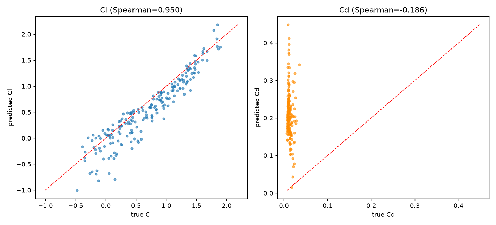
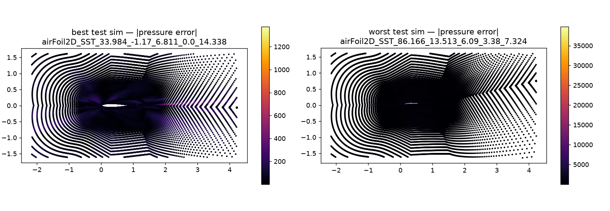
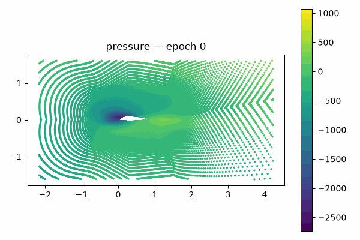
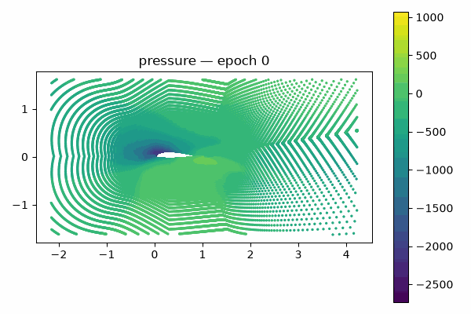

Results
Four checkpoints, evaluated on the same withheld 200-simulation AirfRANS test set, benchmarked against the paper's own MLP/scarce baseline.
Cl / Cd accuracy
| Model | Cl rel. error | Cl Spearman | Cd rel. error | Cd Spearman |
|---|---|---|---|---|
| GraphSAGE — full task, 64k pts/sim best | 0.415 | 0.976 | 8.40 | 0.105 |
| MLP — full task, full resolution | 0.276 | 0.981 | 15.91 | -0.125 |
| GraphSAGE — scarce task, 16k pts/sim | 2.815 | 0.804 | 44.07 | 0.251 |
| MLP — scarce task | 0.830 | 0.950 | 17.62 | -0.186 |
| AirfRANS paper (MLP / scarce) | 0.385 | 0.981 | 3.50 | -0.139 |
Cl Spearman = rank correlation between predicted and true lift coefficient across the 200 test
simulations (1.0 = perfect ranking). Cd is the harder target throughout: it depends on near-wall velocity
gradients that a per-point MLP structurally can't resolve, and even GraphSAGE only partially closes the
gap. Full numbers, including field-level MSE, in checkpoints/eval_results_*.json on
GitHub.
What the corrected numbers mean
The full-scale GraphSAGE result above (Cl Spearman 0.976) is the honest, corrected number — an earlier
evaluation run showed a much worse Cl score (0.826) that turned out to be a real bug: the evaluation code
split each test simulation's points into fixed-size chunks for inference, and for a graph-based model
each chunk got its own independent neighbor graph, silently cutting real spatial neighbors at chunk
boundaries. Fixing it (one graph per simulation, matching how the model is actually used) also meant
re-checking the scarce-task GraphSAGE numbers, which had the same bug — its real Cl Spearman is
0.804, not the previously-reported 0.966. The full writeup, including why the bug helped one model and
hurt the other (it's about a training/evaluation point-density mismatch, not just a bug), is in
PROGRESS.md under 2026-07-11.
Predicted vs. true


Training evolution
Predicted pressure field, same fixed colorbar, one snapshot every 10 epochs — noise sharpening into physics.

